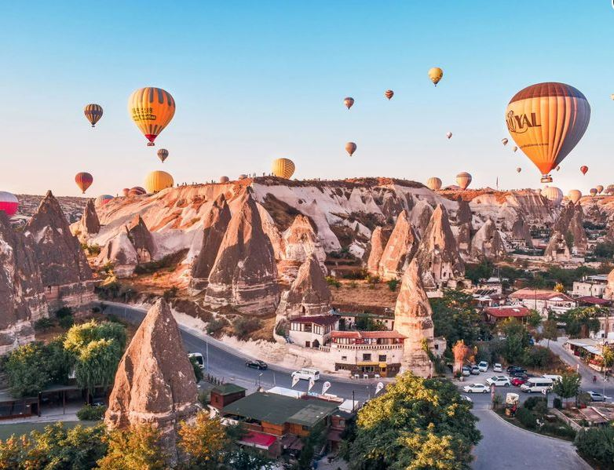
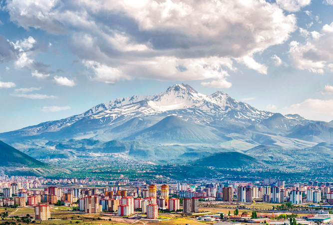
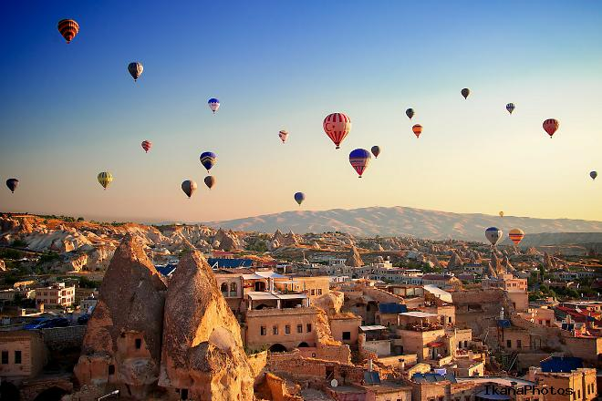
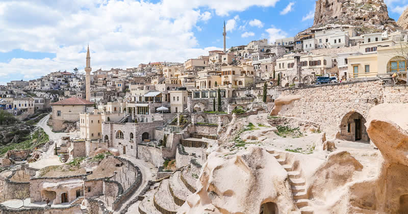
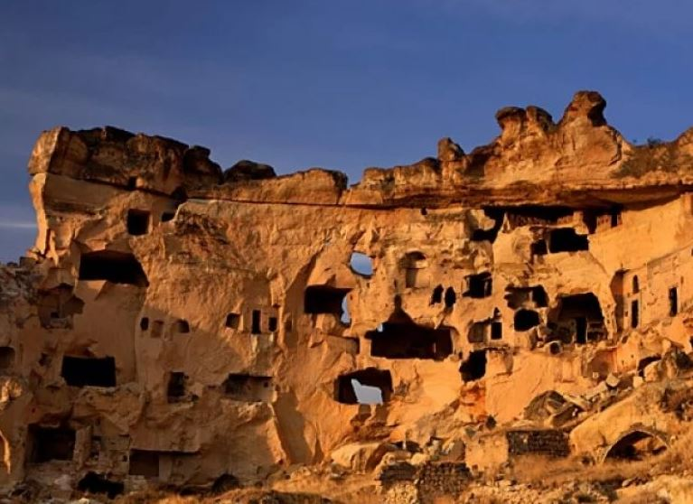
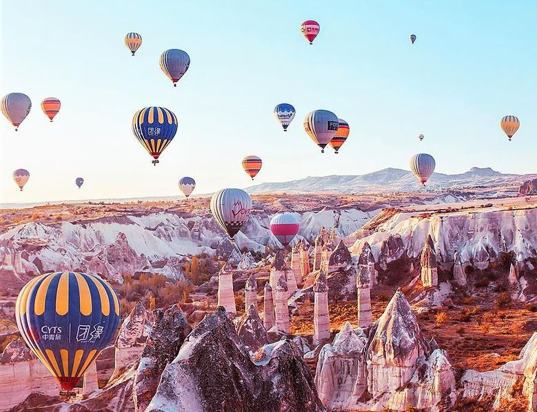
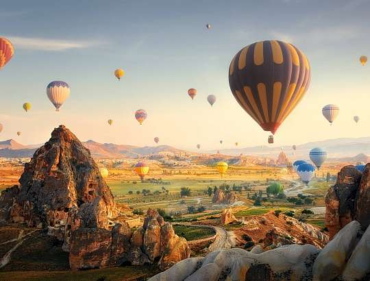

Когда ехать в Каппадокию: туристические сезоны

Погода в Каппадокии летом
Летом температура воздуха в Каппадокии достигает 25-35 градусов. Самый приятный в отношении погоды
месяц - июнь. Еще не так жарко, туристов не слишком много, цены не самые высокие, в транспорте нет
толкучки. Если вы едете в Каппадокию летом - лучше месяца, чем июнь не сыскать.
В июле повышается
температура и вместе с ней повышаются цены на жилье, продукты и услуги. Самый жаркий месяц - август,
зато в августе в небо поднимается самое большое количество шаров, так что август дорогой, жаркий и
вместе с тем зрелищный.
Погода в Каппадокии осенью
Сентябрь - следующий после июня по идеальности месяц для поездки. Температура воздуха опускается до
приемлемых 25-27 градусов, а вечером может быть даже прохладно, туристов меньше, а шаров все так же
много. В кафе появляются свободные места, а на рынках нет толпы.
Октябрь хорош в первой половине,
а вот во второй его части и до конца ноября вашему отдыху могут помешать ветра и дожди. А могут и не
помешать - смотрите прогноз. Осень в Каппадокии хороша яркими красками, низкими ценами на жилье и
питание, хорошим настроением у местных жителей, которые за лето устали от туристов.
Погода в Каппадокии зимой
Зимой жизнь в Каппадокии не останавливается, а просто замедляется. Температура воздуха может быть 5
градусов тепла, а может и 15 - это уж как повезет. Опять таки - перед поездкой изучайте прогноз.
Зимой в небо все так же запускаются воздушные шары, просто в меньшем количестве. Большинство кафе
работают, отели тоже открыты, причем цены в них приятно удивляют, но в номерах может быть прохладно.
Да и вообще зимой берите с собой теплую одежду - холод может застигнуть в самый неподходящий момент.
Лучше расстегнуть куртку, чем замерзнуть во время Полета мечты над Каппадокией.
Погода в Каппадокии весной
В марте может быть еще ветренно и дождливо, а вот в начале апреля все уже покрыто зеленью и согрето
солнечными лучами. Туристов в апреле еще очень мало, цены в кафе и в сувенирных лавках приятные,
воздух прогревается до 20 градусов, но вечером температура может снижаться, так что берите с собой
теплые вещи.
Май - начало высокого туристического сезона, особенно вторая его половина. В мае в
Турции хорошо - людей мало, погода шикарная, цены низкие, так что добро пожаловать.
Вывод, который мы можем сделать: пик туристического сезона в Каппадокии приходится на
вторую половину июня, июль и август. В это время здесь наиболее красочно, но при этом очень людно,
довольно жарко и дорого. Если не хочется переплачивать и плавиться на солнце - приезжайте в мае или
сентябре. Людей в эти месяцы гораздо меньше, воздух прохладнее, а цены приемлимее.
Куда ехать в Каппадокии: самые популярные города
Кайсери

Столица Каппадокии, древний город Кайсери, стоит у подножия вулкана Эрджияс. В Кайсери есть все, что
нужно туристу, включая крупный аэропорт, Kayseri Erkilet Airport, в который вы, скорее всего, и
прилетите, если будете добираться до Каппадокии на самолете. Аэропорт Кайсери принимает рейсы из
Анкары, Стамбула, Москвы, Киева и других крупных городов.
Летом сюда приезжают, чтобы побродить
по горным тропам, усыпанным вулканическим песком, зимой - спускаться на лыжах или сноуборде по
крутым горнолыжным трассам. Кайсери - большой город, здесь живет почти полтора миллиона
человек.
Осмотр достопримечательностей начнется с городской крепости, которая стоит здесь вот уже
15 столетий, затем прогулка по Археологическому музею и знакомство с вещами древних римлян и
византийцев, а потом встреча с мечетью Улу Ками, построенной в далеком 12 веке, а потом еще одну
красивую мечеть, которая называется Уршунлу. Она была построена позднее, в 16 веке, тем же
архитектором, который спроектировал величествунную стамбульскую мечеть Сулеймание, где жили султан
Сулейман Великолепный и Роксолана. Затем можно вернуться к городской крепости и побродить по рынку -
насытиться колоритом витрин, накупить сувениров и сладостей. Если покажется, что маловато шопинга -
заходите в большой торговый центр Forum Kayseri, а потом побродите по центральным улочкам около
крепости, там десятки магазинов на любой вкус и кошелек, плюс сами улочки очень интересные -
старинные стены домов перемешаны с новостройками, пошарпанные витрины магазинов, где продается все,
что угодно, замиксованы со стильными современными фойе отелей и ресторанов, котики, без которых в
Турции никуда, лавочки со вкусной и необычной местной едой.
Гёреме

Туристическая столица Каппадокии - небольшой городок Гёреме, вокруг которого расположен одноименный
Национальный парк. Город удивителен тем, что он гармонично вплетен в окружающий ландшафт. Часть
домов - привычные нам постройки из кирпича и камня, а часть - настоящие пещерные дома, которым много
сотен лет. Сама долина, в которой расположен городок, образовалась в результате извержений вулканов
Эрджиес, Гюллюдаг и Хасандаг. Потом сюда пришли люди и поняли, что местность пригодна для жизни -
выдолбили в камнях пещеры и организовали их по своему усмотрению. Гёреме - часть популярнейшего
туристического маршрута Учхисар—Гёреме—Чавушин—Аванос. Все эти поселки расположены на расстоянии
нескольких километров друг от друга и вместе составляют своеобразное "Золотое кольцо" Каппадокии,
только это не кольцо, а скорее прямая линия. Между всеми этими городами ездят автобусы и такси, а
при большом желании часть маршрута можно преодолеть и пешком.
В поселке Гёреме живет всего 2
тысячи человек, зато гостей сюда каждый год приезжает несколько миллионов. В Гёреме вас ждут
удивительные пещерные отели, колоритные кафе и рестораны, симпатичные сувенирные магазины и, самое
главное, потрясающие виды. В городе есть несколько смотровых площадок, откуда можно любоваться
полетом воздушных шаров, а если хотите, то не только любоваться, а присоединиться к нему, и масса
туристических центров, где можно купить тур по одному из трех популярных маршрутов: Красному,
Зеленому и Синему.
Самая главная достопримечательность Гёреме - национальный парк, который
раскинулся вокруг. А это более 400 церквей - некоторые расположены в пещерах, а некоторые имеют
привычный нам вид, и множество живописных долин - Долина любви, которая имеет такое романтическое
название из-за множества камней, своей формой напоминающих фаллосы, Голубиная долина, где вы увидите
дивной красоты скалы, уникальные церкви с многовековой историей и собственно голубятни, которые
построили здесь для того, чтобы голуби производили помет, а он в свою очередь нужен был для
удобрения земли. Сейчас помет уже никому особо не нужен, но голуби по прежнему живут в этой
местности. Красная и Розовая долины привлекают туристов цветом гор, а белокаменная долина Мескендир
покоряет диковинным видом скал.
Учхисар

Древний город Учхисар словно сошел с полотна Питера Брейгеля "Вавилонская башня". Город расположился
на скале, вершину которой венчают развалины крепости Учхисар. Крепость выдолблена внутри скалы из
мягкой породы - туфа. Дома, которые находятся ниже, также выстроены из этой породы. Поэтому все
выглядит так, словно скала растаяла и постройки просто стекли с вершины горы вниз, в
долину.
Учхисар расположен в 4 км от Гёреме и это второй по популярности туристический город в
Каппадокии. Если вы хотите увидеть, как взмывают в небо шары, или покататься на шаре, ищите отель
или здесь, в Учхисаре, или в Гёреме - особой разницы в цене или близости к месту взлета нет. К
взлетному полю вас все равно отвезет трансфер и по времени поездка что из Гёреме, что из Учхисара
занимает одинаковое количество времени - где-то полчаса.
На самом верху крепости, куда можно
попасть за пару евро, расположена смотровая площадка, одна из лучших в этой местности. Оттуда можно
любоваться взлетом шаров на заре, соседней Голубиной долиной и близлежащими скалами.
Если вы
хотите просто погулять по городу, выберите Красный маршрут по Каппадокии. В него входит в посещение
города-крепости Учхисар, а также живописной долине Пашабаг с грибовидными скалами, пещерных
монастырей Гёреме и города мастеров Аванос, где вас познакомят с местными ремеслами.
В городе
живет две с половиной тысячи человек, немного больше, чем в Гёреме. Но отелей меньше, около 50, так
что на всех желающих не хватает - бронировать нужно заранее.
Подземный город Каймаклы

Уникальный пещерный город Каймаклы расположен в 20 км от Невшехира и в 25 км от Гёреме. Точно
неизвестно, когда именно был построен город, но предполагается, что это сделали хетты в 1
тысячелетии до нашей эры. Позже город был освоен и переоборудован первыми христианами, которые
спасались от набегов арабов и религиозных преследований. В городе 8 этажей, выдолбленных в мягкой
породе - туфе. Кроме жилых комнат на этажах расположены молитвенные помещения, водохранилища,
конюшни, кухни и подсобные помещения, погреба и склады. Одновременно в городе могли находиться 15
тысяч человек. Это потрясающее место с богатой историей, но сюда лучше приходить не самостоятельно,
а с экскурсией, например Все краски Каппадокии. Во-первых, в городе очень легко заблудиться, ведь он
создан специально для того, чтобы людей здесь было сложно найти. Так что в Каймаклы сложно найти и
вход, и выход. Вторая причина - интересная история этого места, которую интереснее слушать из уст
опытного человека, знакомого с секретами каждого помещения. Но если вы поедете самостоятельно,
учтите, что в городе нет ни ресторанов, ни отелей, так что берите с собой перекус, воду и, конечно,
удобную обувь.
Подземный город Деринкую

Подземный город Деринкую был построен одновременно с поселением Каймаклы. Оба города были обнаружены
в 1963-1964 году. Оба города еще не исследованы окончательно, раскопана только их часть. Например в
Деринкую археологи открыли только 11 подземных этажей, но факты говорят, что их было больше. Во
времена гонений и преследований в городе могло скрываться около 20 тысяч христиан. Причем они жили
здесь вместе с домашним скотом, потому что на этажах обнаружены не только спальни, кухни и склады,
но и помещения для животных.
Город спроектирован таким образом, чтобы даже если противник
проберется внутрь, ему не удалось найти жилые помещения. В запутанных тоннелях и коридорах очень
легко заблудиться, мы бы даже сказали сложно не заблудиться, так что если уж вы попали сюда без
экскурсии и потерялись, не стесняйтесь прибиться к какой-то группе и ходить с ними. Ну а лучше
заранее забронировать одну из десятков экскурсий, которые сюда ходят. Их выбор богат, например Все
краски Каппадокии или Зеленый тур по Каппадокии. Обычно экскурсии включают в себя и подземные города
и каппадокийские долины, чтобы вы могли увидеть все лучшее за один день.
Самые интересные экскурсии по Каппадокии

Большое путешествие по Каппадокии
Первым делом вы отправитесь в Долину любви, которая называется так из-за фаллосообразных скал,
которыми покрыта земля.
Следующий пункт - город гончаров Аванос, где вы не только полюбуетесь
шедеврами керамики, но и поучаствуете в сотворении своей посуды. В городке Ургюпе вы продегустируете
местные вина, а потом отправитесь в старинный город-крепость Учхисар, где вас будут ждать смотровые
площадки с шикарными панорамами.
Вы также посетите Долину Деврент, которую в Каппадокии называют
каменным зоопарком, из-за того, что местные скалы очень напоминают животных. На вашем пути
встретится удивительная Долина голубей, словно сшедшая с сюрреалистических полотен, а также
умиротворяющие пейзажи провинции Ортахисар.
Полет мечты над Каппадокией
Едва ли есть хоть кто-то, кто не мечтает увидеть прекрасную Каппадокию с высоты полета воздушного
шара?
Вся организация полета ляжет на плечи агентства, от вас требуется только затаить дыхание и
впитывать сказочные виды гор и долин, которые будут расстилаться далеко под вашими ногами.
В
корзине вместе с вами будут профессиональные пилоты, которые гарантируют безопасность.
Зеленый тур по Каппадокии
Путешествие по южной части Каппадокии включает в себя прогулку по подземному городу Деринкую,
прогулку по удивительным скальным монастырям, которые находятся около деревни Селиме. Затем вас ждут
каньоны долины Ихлара и фантастические панорамы Голубиной долины.
В конце путешествия можно будет
попробовать блюда местной кухни в одном из самых колоритных заведений региона.
Все краски Каппадокии
Эта экскурсия включает в себя все самые известные долины, города и достопримечательности Каппадокии.
Вы увидите необычную Долину Голубей, похожую на каменный зоопарк Долину Лервент, Розовую Долину,
которая поражает малиново-красным цветом скал, спуститесь на глубину 80 метров в Подземный город
Каймаклы, изучите пещерные монастыри Гёреме, поднимитесь на самую высокую точку Каппадокии - замок
Учхисар, и возьмете урок гончарного мастерства в городе-гончаров Аванос.
Где в Каппадокии покататься на воздушном шаре и сколько это стоит

В Каппадокию едут не только для того, чтобы посмотреть на захватывающее дух зрелище - сотни разноцветных
воздушных шаров, взмывающих ввысь на рассвете. Но и для того, чтобы присоединиться к этому
волшебству.
Воздушные шары поднимаются каждое утро и летают около часа. Присоединиться к действу
может каждый, кроме беременных и детей до 7 лет, для этого не нужно никакой специальной экипировки и
умений. Для тех, кто боится высоты, в городе и окрестностях есть несколько смотровых площадок, с которых
можно наблюдать за полетом. Вы также можете снять отель с балконом или видовой террасой, откуда будет
открываться вид на долину и горы. На ресепшене каждого отеля знают, откуда открывается самый красивый
вид, вам нужно только спросить.
Когда летают шары
Шары в Каппадокии летают каждое утро круглый год, но полет может быть отменен в связи с погодными
условиями: дождем, снегом, туманом или ветром. Поэтому в Каппадокию лучше приезжать хотя бы на
два-три дня, а лучше и все пять, чтобы вам точно повезло. Это значит, что бронировать отель и
обратный билет на самолет лучше с гибкими датами, чтобы можно было отменить или продлить. Ну и
сверяться с прогнозом погоды, конечно. Но даже если вы приехали на пару дней и вам не повезло с
погодой - здесь прекрасные ландшафты, идеальные отели, вкусная кухня и потрясающий сервис, так что
вы отлично проведете время.
Как забронировать полет на шаре
В городах и поселках Каппадокии работает множество компаний, которые занимаются полетами на шаре.
Туристические бюро расположены просто на улицах или в отеле. То есть вы можете просто спуститься к
стойке ресепшена и договориться о том, чтобы вам забронировали место. Для этого вам понадобится
поверхностное знание английского языка, 100-150 евро и везение, чтобы на вас хватило места. В
подавляющем большинстве случаев места хватает и еще остаются свободные, но в пик сезона, в июле и
августе, может случится так, что нужно будет подождать один-два дня. Поэтому если вы приехали на
пару дней, полет лучше забронировать заранее. Вы можете сделать это у местных турецких фирм,
Kapadokya Balloons, Göreme Balloons и других, по телефону или через интернет, а можете забронировать
на сайте в русскоязычных агентствах. Это удобнее потому что договариваться об экскурсии все таки
проще на понятном языке, плюс цены часто бывают ниже. Например в турецких агентствах стандартный
билет стоит 90 евро, в то время как компания Tripster предлагает тот же самый полет за 67 евро, а на
сайте Sputnik8 билет можно купить за 80 евро, но зато в кабине будет 10 человек, а не 15-20, как это
часто бывает.
Как проходит и сколько длится полет на воздушном шаре
Все мероприятие обычно проходит так: к месту отлета вам нужно прийти к 4-5 утра, а значит из отеля
выйти за полчаса. В стоимость билета обычно входит трансфер до взлетного поля, а также страховка.
Какого-то конкретного места для взлета нет, оно часто меняется в зависимости от погоды, но
большинство шаров отправляется из Национального парка Гёреме. Трансфер доставит вас в специальный
зал ожидания, где можно выпить кофе и перекусить бутербродами. Перед самым полетом пилоты проводят
инструктаж, чтобы вы знали правила безопасности.
В корзине обычно летит от 5 до 20 человек.
После того, как все зашли в кабину, шар поднимается на высоту 1 км и парит над живописными горами и
долинами. Каждая поездка сопровождается пояснениями и рассказами пилота. После спуска на землю всем
наливают шампанское и иногда выдают сертификат о том, что вы действительно принимали участие в
полете на воздушном шаре.
Полет занимает один час, но вместе с трансфером и ожиданием выходит
три, а то и четыре часа. Утром может быть гораздо холоднее, чем днем, поэтому возьмите с собой
дополнительную теплую одежду.
Чем заняться в Каппадокии
Ни шарами едиными будет развлечен человек, но еще вкусной едой, прогулками по живописным долинам и
подземным городам, катанием на верблюдах и знакомством с местными традициями.
Погулять по скалистым долинам
В Каппадокии множество достопримечательностей, которые сложно осмотреть самостоятельно, потому что
они разбросаны по всей области. Существует три популярных туристических маршрута: два простых -
Зеленый и Красный, и один более сложный - Синий. Если у вас немного времени, просто выберите один
маршрут и экскурсовод покажет вам самые интересные места. Если хотите гулять самостоятельно, просто
вбейте точки маршрутов в навигатор и приготовьтесь получить эстетическое удовольствие.
Зеленый маршрут обычно проходит по подземному городу Деринкую, скальным монастырям
селения Селиме, окруженной горами долине Ихлара, Голубиной долине и городам Гёреме и Учхисару.
Красный маршрут включает в себя посещение города Гёреме и крепости Учхисар,
прогулку по долине Пашабаг с ее скалами-грибами, знакомство с поселением Ургюп, расположенным среди
скал, и городом мастеров Аваносом, а также посещением Долины любви и Долины воображения. Оба
маршрута, и зеленый и красный, занимают почти весь день, так что не планируйте больше ничего, ну
кроме, разве что, ужина.
Синий маршрут - самый длинный и состоит из наиболее труднодоступных
мест. Сначала вы посетите греко-турецкий город Мустафа-паши, затем погрузитесь в античные памятники
города Собесос, прогуляетесь по долине Соанлы и полюбуетесь тамошними церквями, потом вы заедете в
город Ургюп, заглянете в монастырь Халач и, может быть, спуститесь в подземный город Деринкую.
Заканчивается маршрут в древней неприступной крепости Ортахисар.
Благодаря тщательно продуманным
маршрутам вы сможете увидеть самые впечатляющие места. А чтобы составить полную картину можно взмыть в небеса на воздушном шаре.
Полакомиться блюдами местной кухни
Большинство домов, отелей и ресторанов в местных городах построены из местной горной породы - туфа.
Он податливый и в нем легко выдалбливать пригодные для жизни пещеры. Стены таких сооружений каменные
и выглядят очень необычно. В ресторанах обычно приглушенный свет, может играть негромкая музыка с
турецкими мотивами, официант приносит комплименты и все говорит о том, что вас здесь очень рады
видеть. А ведь вы только пришли. Впереди вас ждут тести-кебаб - его подают в глиняном горшочке,
который при вас же и разбивают, насыщенный куриный суп арабаши, кавурма - мясо, тушеное с овощами и
специями, тонкие лепешки гёзлеме, в которые заворачивают самые разные начинки, а также ароматные
местные вина.
Встретить волшебный рассвет
Самыми красивыми рассветами в мире славится греческий Санторини, но Каппадокия задаст жару.
Любоваться восходящим солнцем можно с балкона или террасы вашего отеля, благо в большинстве отелей
такие террасы есть. А если вдруг террасы нет или она есть, но вам хочется разнообразия, в
туристических городах, таких как Гёреме и Учхисар, есть множество смотровых площадок, откуда
открываются потрясающие виды десятков воздушных шаров, растворяющихся в первых лучах солнца.
Погулять по сувенирным магазинам и маленьким базарчикам
Турки и торговля неразрывно связаны, поэтому даже в самом маленьком городке вы все равно найдете
рынок, а на рынке можно купить все, что угодно, от сережек до верблюда.
Познакомиться с котами
Турция теплая страна и коты с радостью готовы жить в таком комфортном климате. Поэтому они здесь
буквально на каждом шагу - сидят на ступенях вашего отеля, мяукают под балконом, смотрят с дерева и
ждут, что вы угостите их вкусненьким.